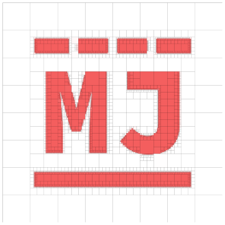
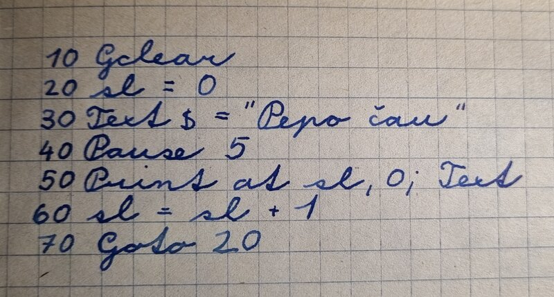
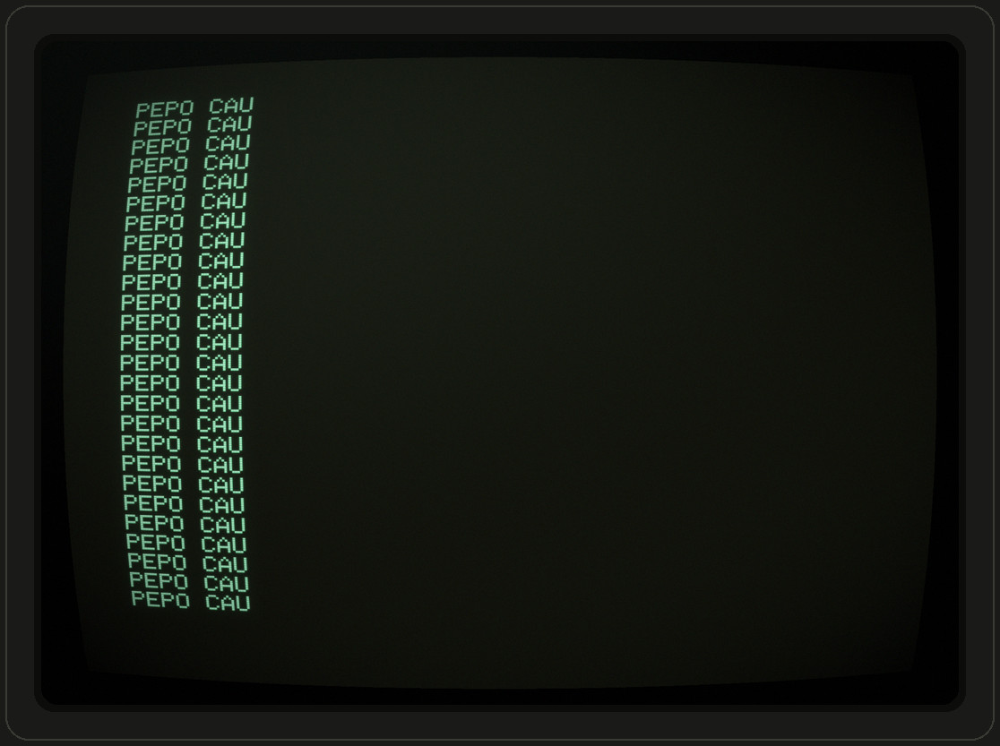

Michal Jurosz
@mj41
Complexity whisperer · Cleartographer of stigmergic chaos · Professional yak shaver · ∞-1 tools from shipping · IRL dad.exe · URL dreamer
Czech Republic, Třinec
Akamai
About Me#
I started programming back in the previous millennium. Preparation before the computer club was done offline on paper. I enjoyed it a lot — bits and bytes, exact logical operations, clear commands that the computer executed without objection.
Software and the Internet gradually permeated the world of people. Open Source and large proprietary software projects became dependent on team collaboration. Development and operation of software systems became my profession. Over time, these became complex distributed systems with high demands on security and reliability.
"The universe is made of stories, not of atoms."
After studying cybernetics, I never returned to robots in my professional life, but something remained. To understand colleagues, the universe, and everything... I began systematically searching for useful mental models. Modeling the cooperation of living and non-living agents and observing their intertwined stories (processes) became my passion.
infinite.pm#
That search turned into a project. infinite.pm — Infinite Process Modeling — is a way to write down processes, stories and systems as readable graphs. It is an experiment in applying Mark Burgess's Semantic Spacetime γ(3,4) representation to everyday modeling and to software engineering.
Burgess's insight is the foundation: with three kinds of nodes — event, thing, concept — and four kinds of edges you can sketch any observer's view of anything in space and time. A deployment, a murder mystery, a team, a life. There is no view from nowhere: every graph is somebody's account, at their chosen timescale, drawn for a stated purpose.
In practice you write plain text next to your code and docs, and the tools render and re-render the diagrams from it — a VS Code extension for live editing, a renderer for Markdown and for an infinite canvas. The aim is to externalize our mental models, think with them as a partner, and let many small models grow into one living graph that humans and AI agents can both read.
Start with the tutorial, play in the lab, or read the code on GitHub. It is early, spec-driven and vibe-coded, and corrections are welcome.
Programming#
One of my very first programs, written in school year 1991/1992 when I was 11. I carefully wrote this in my notebook after a computer club. The code is in BASIC-G for the PMD 85 — a Czechoslovak 8-bit computer. MHB 8080A (Intel 8080 clone) was manufactured by Tesla Peišťany in 1985–1988, at 2.048 MHz, 48 kB RAM, 4 kB ROM, B/W TV output with resolution 288×256 and optional Tape recorder.



Pepo čau is Czech for "Hi Pepa" — my hello, world. That is what the notebook says; the machine had ASCII and nothing else, so on screen it came out as PEPO CAU. The green screens above are not mock-ups: they are a PMD 85-2 with the BASIC-G V2.0 ROM module running in Martin Bórik's GPMD85Emulator, with the program typed in key by key.
Two of the three harder problems, in my very first program. Naming: sl is short for sloupec, Czech for column — but it indexes the row, so it should have been ra, for řádek. Off-by-one, of the jump-target kind: line 70 goes back to 20 instead of 40, so sl is reset on every pass and the text never moves. There are only two hard problems in computer science: cache invalidation, naming things, and off-by-one errors.
I remember writing programs at home on paper and then frantically typing them in during the club sessions. Usually, I couldn't save the program to a cassette tape, so I had to type it all over again the next week. I used an pen eraser to fix bugs.
After the Velvet Revolution in Czechoslovakia, I convinced my great-grandmother to take part in Voucher privatization. With the money I received, my parents bought me my first second-hand computer: an 386SX, 20 MHz (Turbo Mode), 4 MB RAM, a 40 MB hard drive and 5¼-inch floppy drive. It was the MS-DOS and Turbo Pascal era — no internet. I learned programming from books and magazines. Also enjoyed Dune II, Settlers, Lemmings, Prince of Persia and other games.
One of my classmates had an older friend at university who lent me a floppy disk containing Pascal code to switch the screen into graphics mode, plus some assembly to read the mouse cursor position and button states. I still remember how fascinated I was when I finally got it working.